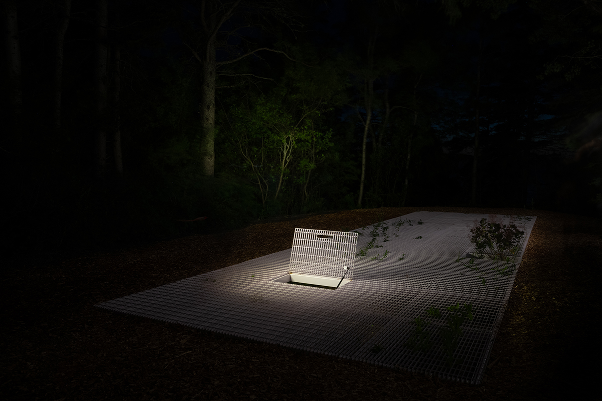

Hermine Demael and Stephen Zimmerer are architectural and landscape designers based in New York. Their work addresses the historical contingencies and material realities of building with plants. They teach architecture and media at Syracuse University.